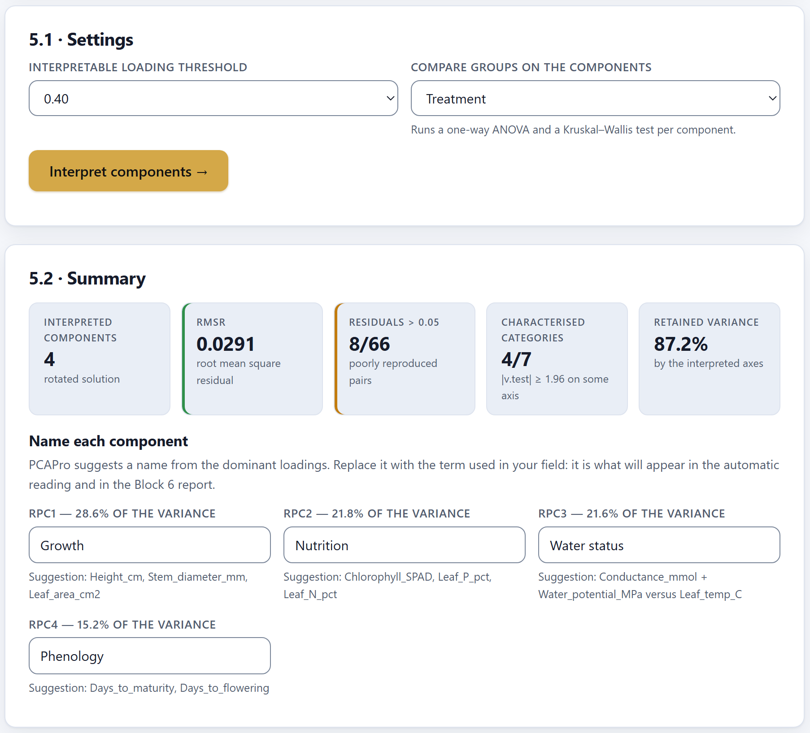
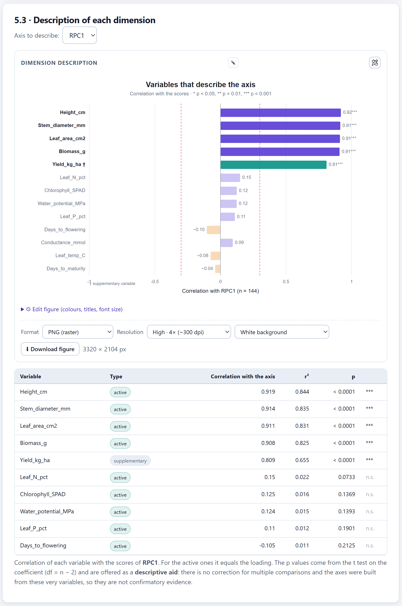
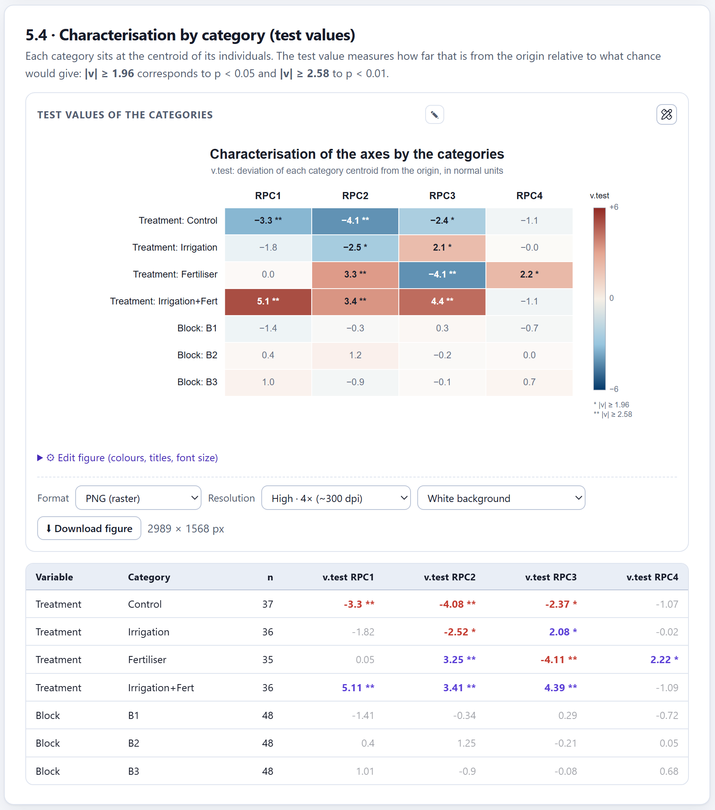
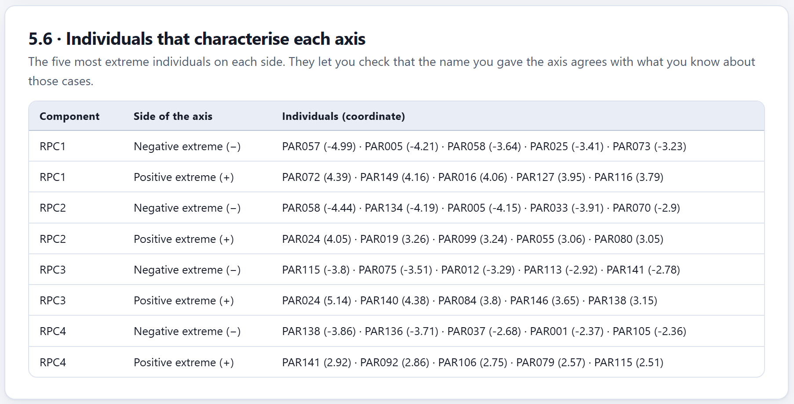
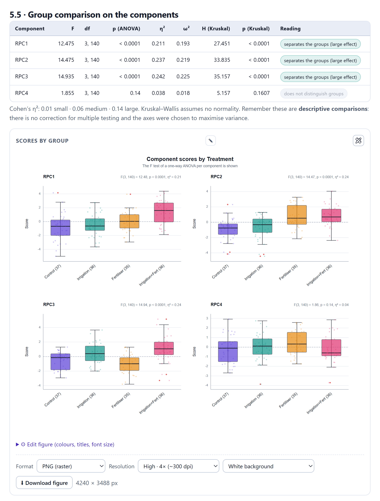
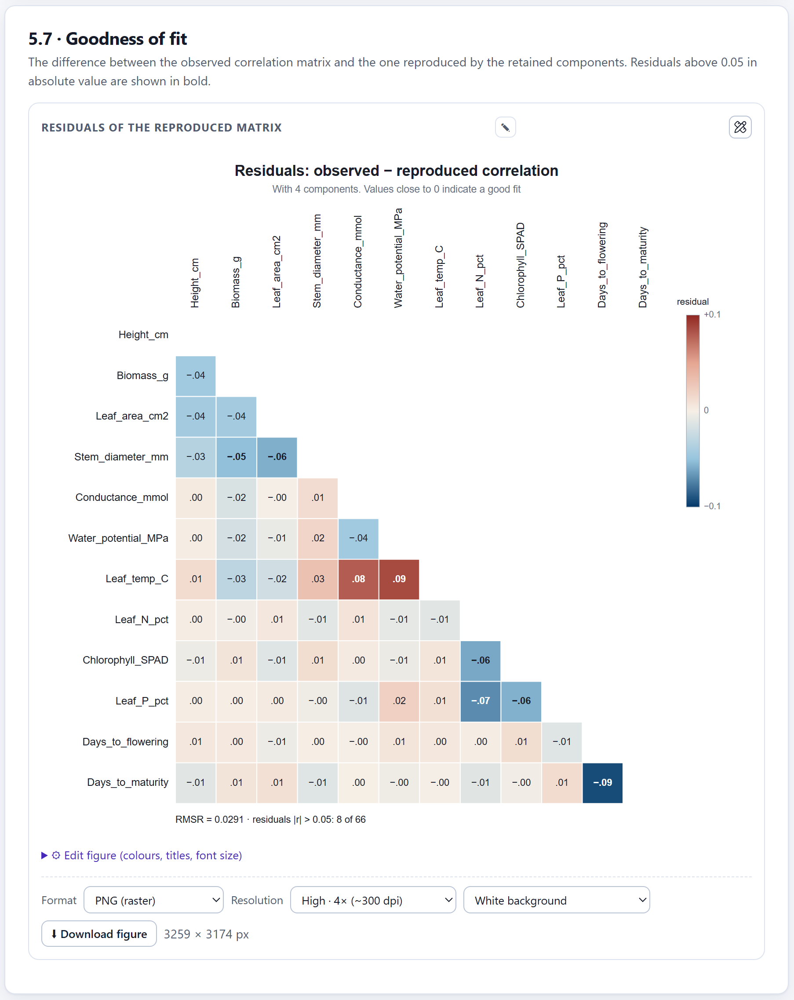
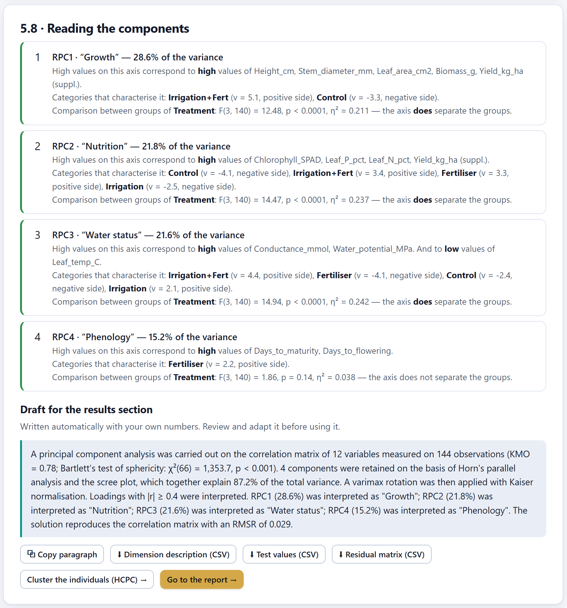
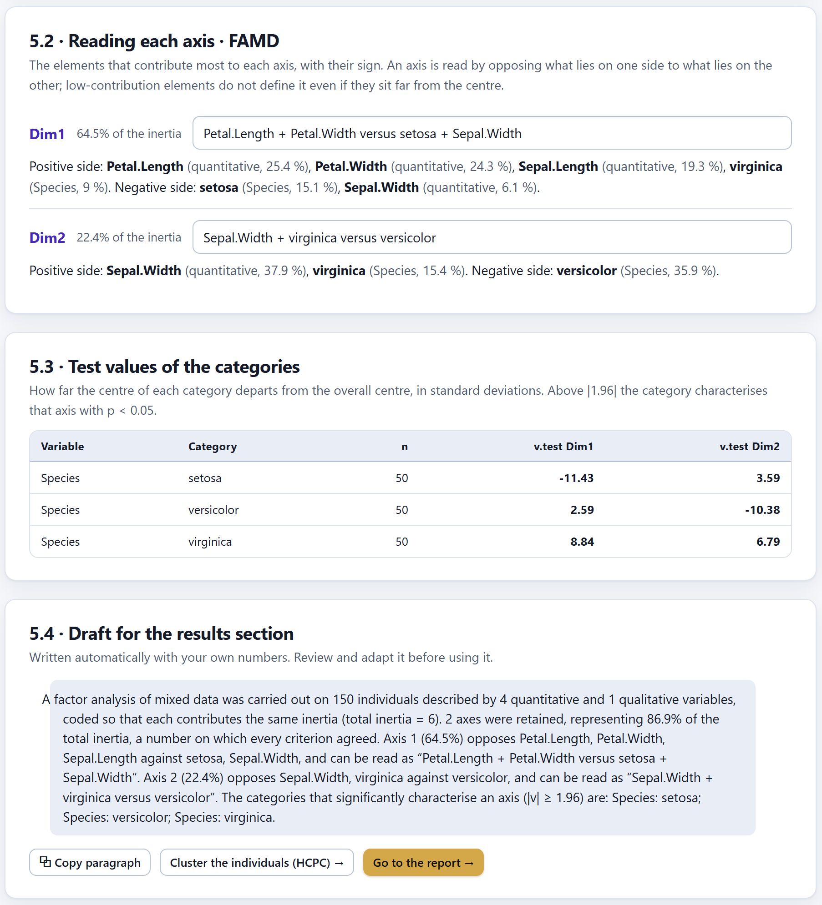

From the numbers to the sentences: how to name each component, which variables and categories describe it, how to compare groups without falling into circularity, how much of the structure the solution reproduces and how to turn it all into a draft of the results section.
A component is a linear combination and, on its own, it means nothing. Interpreting it is finding the concept of your discipline that explains why those variables vary together, and giving it a short name that a reader understands without looking at the table of loadings.
Block 5 is unlocked when the maps of Block 4 are built and it works on the solution you chose there: unrotated or rotated. It has a theory card with five topics and the 5.1 · Settings card, with two options. Pressing Interpret components → brings up seven result cards and unlocks Block 6.
| Option | Values | Note |
|---|---|---|
| Interpretable loading threshold | 0.30, 0.40 (by default), 0.50, 0.55 and 0.70. | It is independent of the Block 3 threshold: it is advisable to use the same one. |
| Compare groups on the components | Do not compare groups or a qualitative variable from Block 1. | It adds card 5.5 with an ANOVA and a Kruskal–Wallis per component. |
Changing either of the two options interprets again at once. The names you wrote are kept as long as the number of components does not change.

1 2 3 4 5 6 7| Indicator | What it counts | Colour |
|---|---|---|
| Components interpreted | How many, and whether the solution is rotated or unrotated. | — |
| RMSR | Root mean square residual (section 7.4). | green < 0.05 · amber < 0.08 · red |
| Residuals > 0.05 | Pairs of variables whose residual exceeds 0.05 in absolute value. | green < 10 % · amber < 25 % · red |
| Categories characterised | Categories with |v.test| ≥ 1.96 on some axis (section 7.2). | — |
| Variance retained | That of every interpreted axis. | — |
Below the indicators, Name each component offers one field per component, filled in with a suggestion built from the loadings that exceed the threshold. Write the term of your discipline over it: the name passes to the reading of the components, to the results draft and to the Block 6 report. The original suggestion always stays visible below the field.
| If the loadings above the threshold are… | the suggestion is |
|---|---|
| All positive | The three largest: “Height_cm, Stem_diameter_mm, Leaf_area_cm2”. |
| Of both signs | The two largest on each side: “Conductance_mmol + Water_potential_MPa against Leaf_temp_C”. |
| All negative | The three largest preceded by “Lower”. |
| None | “(no clear loading)”: the axis is not interpreted with that threshold. |
| Question | If the answer is no… |
|---|---|
| Does it sum up all the marker variables, not just the first? | Look for a more general term, or check whether two themes are mixed. |
| If it is a contrast, does it say what lies at each end? | Use the form “A against B”, or a gradient name: “blade thickness”. |
| Do the supplementary variables and the extreme individuals confirm it? | The name describes the loadings, but not the system: think again. |
| Would a reader understand it without seeing the table? | Avoid column names: “Growth”, not “Height_cm, Biomass_g”. |
The sign of an axis is arbitrary. Name the axis by its positive end and, if you invert the sign in one figure to read it better, do so in all of them and say so.
Two cards describe each axis from outside the loadings: 5.3 · Description of each dimension, with the quantitative variables, and 5.4 · Characterisation by category (test values), with the qualitative ones. Together they amount to FactoMineR's dimdesc() function.
The Axis to describe: picker chooses the component for the table. The table orders every variable —active and supplementary quantitative— by the absolute value of its correlation with the scores of that axis. For the active ones, that correlation is the loading; for the supplementary ones, the same coordinate as on the Block 4 circle.

1 2 3 4| Column | Contents |
|---|---|
| Type | active or supplementary. |
| Correlation with the axis · r² | The correlation and its square: the proportion of the variance of the variable that the axis takes up. |
| p and stars | A t test on the coefficient with n − 2 df (with the valid n, for supplementary variables): * p < 0.05, ** p < 0.01, *** p < 0.001, n.s. |
The Dimension description figure draws the same correlations as bars. Its editor has its own axis picker, ordering by magnitude or by sign, only the significant ones, only the largest N and the lines at ±0.30, which do not change with the threshold of card 5.1.
Each category of the qualitative variables of Block 1 is placed at the centroid of its individuals. The test value measures how far that centroid departs from the centre of the axis compared with what would be expected if the category were a random sample of the individuals.

1 2 3 4| |v| | Reading |
|---|---|
| < 1.96 | The category is not distinguishable from the centre on that axis (in grey). |
| ≥ 1.96 (*) | It characterises the axis with p < 0.05; the sign says on which side. |
| ≥ 2.58 (**) | p < 0.01. |
Order by |v|: the categories with the highest value are the ones that best characterise the axis. With a large n almost any small difference goes above 1.96: look also at the distance of the centroid on the map.
The axes were built with the active variables, so their correlation with the axis will be significant almost always: with n = 144, |r| ≥ 0.17 is enough. Those p values are a reading aid, not evidence. The p values of the supplementary variables do say something, because those variables took no part in the axes, although they carry no correction for multiple comparisons either.
The 5.6 · Individuals that characterise each axis card lists, for each component, the five individuals with the most negative coordinate and the five with the most positive. They serve to check the name: if you called RPC1 “Growth”, the plots at the positive end should be the most vigorous ones you know.

If you chose a qualitative variable in Compare groups on the components, the 5.5 · Group comparison on the components card appears. For each component it compares the scores of the groups with a one-way ANOVA and with the Kruskal–Wallis test. Only groups with at least two individuals go in.
| Column | Contents | Reference |
|---|---|---|
| F, df, p (ANOVA) | The F test of a one-way ANOVA on the scores. | — |
| η² | Proportion of the variance of the component explained by the factor. | 0.01 small · 0.06 medium · 0.14 large |
| ω² | A less biased version of η²; report it with small samples. | The same |
| H, p (Kruskal) | The alternative that assumes no normality. | — |
| Reading | “separates the groups” with the effect size if p < 0.05; if not, “does not distinguish groups”. | By the ANOVA p |
Below are the Scores by group figure —box plots or means with 95 % CI, one panel per component with its F test— and the Means by group table, with n, mean, SD and the 95 % confidence interval of each mean.
These contrasts are legitimate because the qualitative variable took no part in the axes. But they have two limits that must be stated: they are k tests with no correction for multiple comparisons, and the axes were chosen a posteriori for maximising variance, so the p values are optimistic. Use them to describe on which dimension the groups differ. If your question is “do the groups differ?”, the answer is a MANOVA, a PERMANOVA or a discriminant analysis on the original variables.
If your design has a factor that should not matter, compare it too. In the integrated project, with Block no component distinguishes the groups: F between 0.05 and 1.06, η² ≤ 0.015. It is the check that the differences between treatments are not an artefact of the terrain.

1 2 3 4 5The k retained components allow the correlation matrix to be reconstructed. The difference between the observed and the reproduced one are the residuals; if they are small, the components take up all the structure that matters.
| RMSR | Reading |
|---|---|
| < 0.05 | Good fit: the solution reproduces the structure. |
| 0.05 to 0.08 | Acceptable. |
| > 0.08 | Structure is being lost: consider retaining one more component in Block 2. |
A complement: that fewer than 10 % of the pairs have a residual above 0.05. One particular pair with a large residual points to a relationship that no axis takes up. With the integrated project, 4 components give RMSR = 0.029 and 8 of 66 pairs; with 3, RMSR = 0.105 and 19 of 66: the fourth component is needed.

1 2 3 4 5The figure, Residuals of the reproduced matrix, shows the lower triangle by default —its editor allows the upper one or the full matrix— and marks in bold the residuals above 0.05. The ⬇ Residual matrix (CSV) download gives the full matrix.
The last card, 5.8 · Reading the components, gathers everything into two pieces of text that update when the names change.
| Sentence | Where it comes from |
|---|---|
| Heading | Component, name in quotation marks and percentage. |
| “High values on this axis correspond to…” | Variables with |r| above the threshold, active and supplementary (supp.), separated by sign. |
| “Categories that characterise it” | Up to six categories with |v| ≥ 1.96, from largest to smallest. |
| “Comparison between groups” | F, p and η² of the ANOVA, if you chose a qualitative variable. |
| Colour of the box | Green if at least two variables exceed the threshold; amber if not. |

1 2 3 4 5The draft is a paragraph with your own numbers: matrix, number of variables and observations, KMO and Bartlett, components and cumulative variance, rotation and normalisation, threshold, the name and percentage of each component, and the RMSR. ⧉ Copy paragraph puts it on the clipboard.
| Button | What it does |
|---|---|
| ⬇ Dimension description (CSV) | For each axis, the variables with type, correlation, r² and p. |
| ⬇ Test values (CSV) | Categories with n, v.test and p on each axis. |
| ⬇ Residual matrix (CSV) | The full residual matrix. |
| Cluster the individuals (HCPC) → | Opens the clustering (chapter 8). |
| Go to the report → | Opens Block 6 (chapter 9). |
With a method other than PCA, the same Interpret components → button opens different cards, because the correlation of each variable with each axis does not always exist. What describes an axis is the contribution of each element, with its sign.
| Method | Elements of card 5.2 · Reading each axis |
|---|---|
| CA | Rows and columns of the table, with their coordinate and contribution. |
| MCA | The categories, with the variable they belong to. |
| FAMD | The quantitative variables by their correlation with the axis and the categories by their coordinate. |
| MFA | The variables, with the group they belong to. |
| Card | Contents |
|---|---|
| 5.2 · Reading each axis | For each axis, its inertia, a field for naming it and the elements above the threshold, on the positive and the negative side, with their contribution. |
| 5.3 · Test values of the categories | The test values of the categories over the individuals, with the same formula as PCA. It does not appear in CA, which has no individuals. |
| 5.4 · Draft for the results section | Data of the analysis, retained axes and whether the criteria agreed, what each axis opposes, significant categories and, in MFA, the range of RV between groups. |

1 2 3 4With these methods the Interpretable loading threshold becomes a contribution threshold: threshold × 100 / number of columns. In the FAMD of iris there are 7 columns (4 quantitative and 3 categories), so 0.40 amounts to 5.7 %, a good deal less than the mean contribution, 100/7 = 14.3 %. That is why elements with a modest contribution appear, such as Sepal.Width with 6.1 % on Dim1. To keep only what is above the mean, raise the threshold to 0.70 or read the contributions on card 2.5.
There is no group comparison —the picker on card 5.1 is ignored—, no dimension description by correlation, no extreme individuals, no goodness of fit and no downloads in this block. If you reach Block 5 through the step bar, the group picker may keep the qualitative variables of an earlier file; arriving with the Go to interpretation → button of Block 4 updates it.
The interpretation of the integrated project, carrying on from the case of chapter 6: 144 plots, twelve variables, four components with varimax and the rotated solution on the maps. The figures are the ones from the app.
Treatment and press Interpret components →. RMSR = 0.0291, in green; 8 of 66 residuals go above 0.05; 4 of 7 categories characterise some axis.Block, no component separates the groups.Reading. The treatments do not act on a single dimension. Fertilisation improves nutrition at the cost of water status; irrigation, the opposite; only the combination improves all three axes and shifts the plots towards growth, which is what is most associated with yield. No treatment changes phenology. That reading, dimension by dimension, is what PCA adds to an ANOVA variable by variable.
“A principal component analysis was carried out on the correlation matrix of 12 variables measured on 144 plots (KMO = 0.78; Bartlett's test of sphericity: χ²(66) = 1353.7, p < 0.001). Four components were retained, on which the parallel analysis, the broken stick and Velicer's MAP agreed, together explaining 87.2 % of the variance. A varimax rotation with Kaiser normalisation was applied to them and the loadings were interpreted at |r| ≥ 0.40. The rotated components were interpreted as growth (28.6 %), nutrition (21.8 %), water status (21.6 %) and phenology (15.2 %). The solution reproduces the correlation matrix with an RMSR of 0.029. Yield, projected as a supplementary variable, correlated with growth (r = 0.81) and nutrition (r = 0.65). The treatments differed on the first three components (η² from 0.21 to 0.24), but not on phenology (F(3, 140) = 1.86, p = 0.14).”
With the components interpreted, the next chapter presents the optional clustering of the individuals on the components (Block 5b).